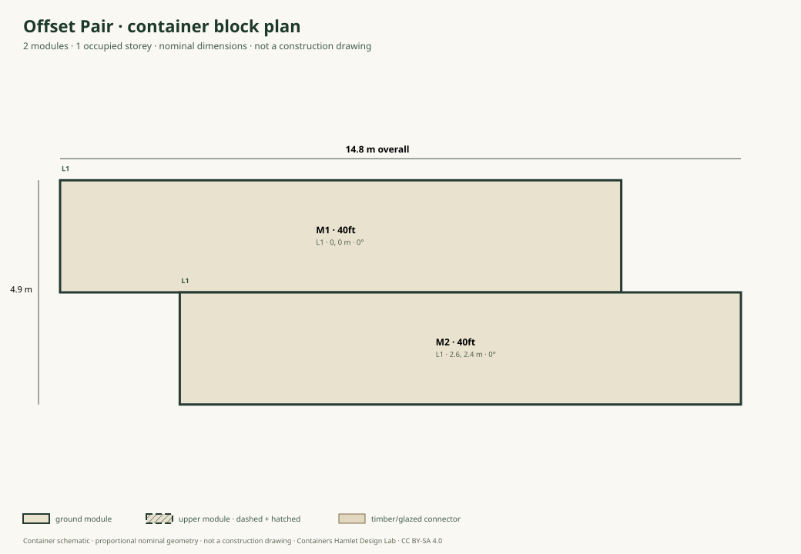
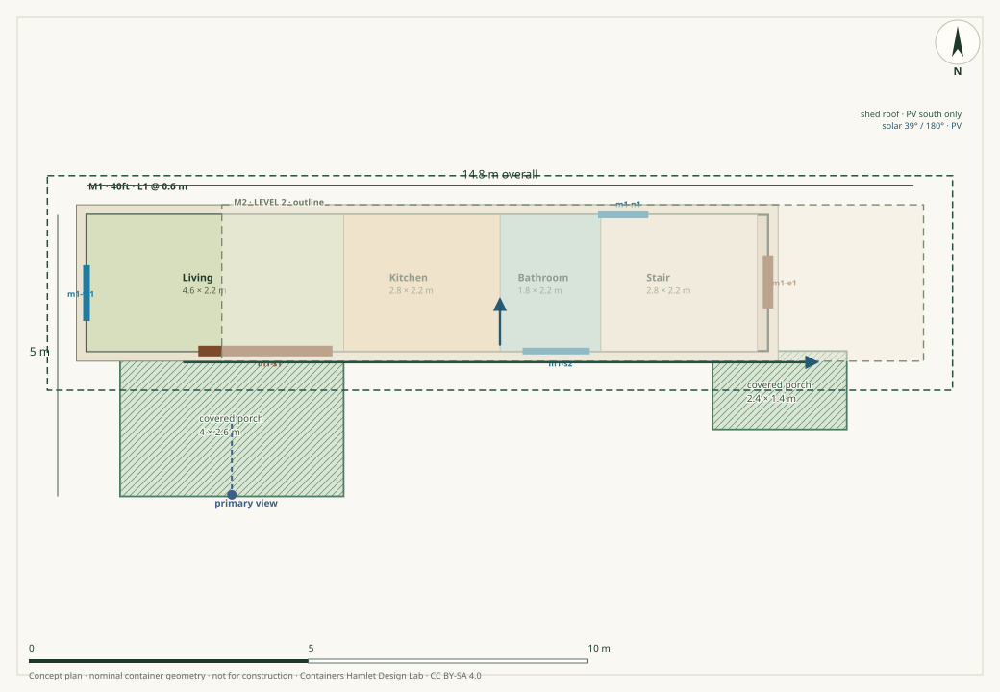
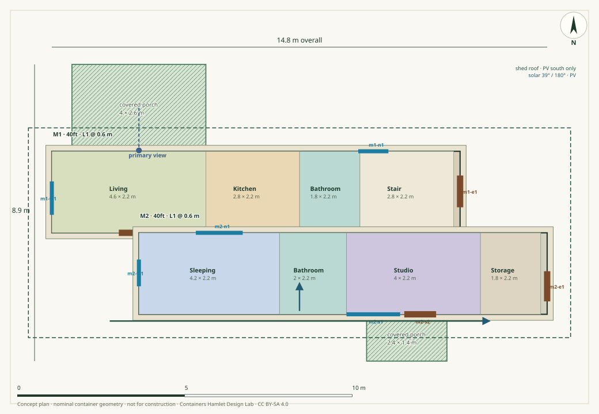
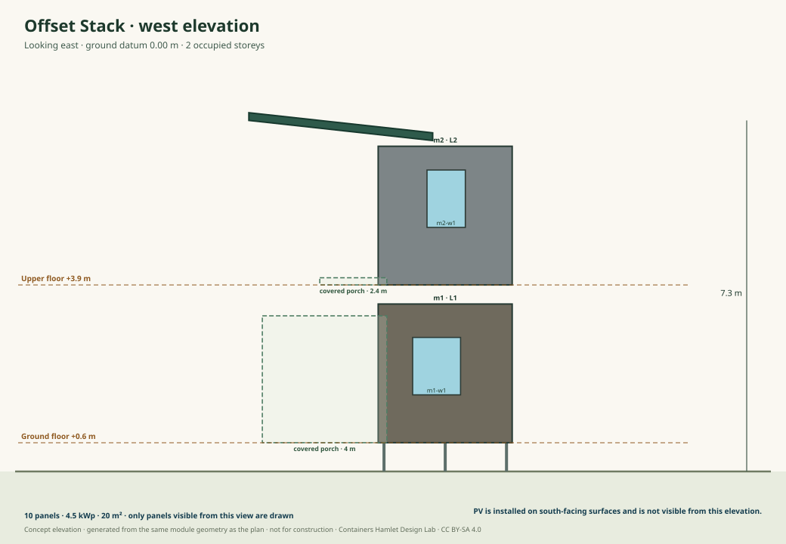
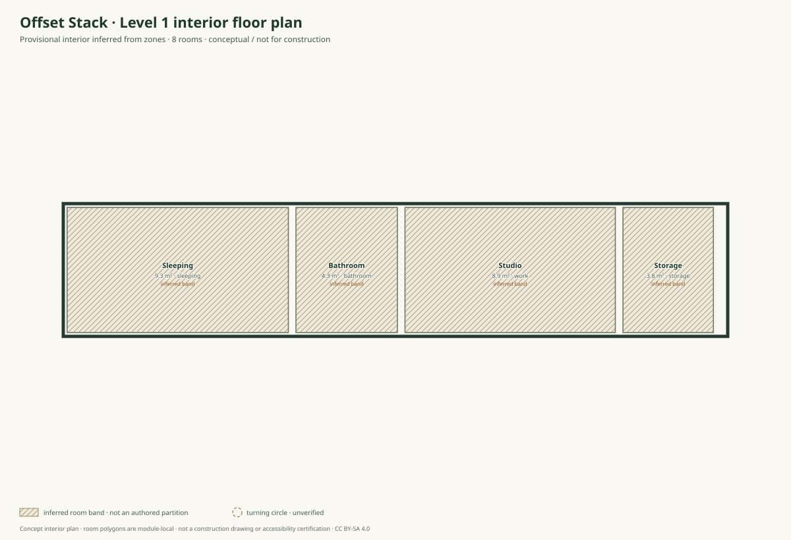
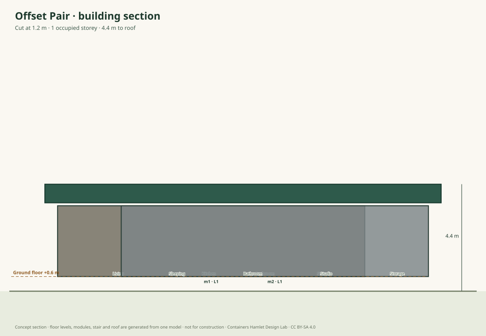
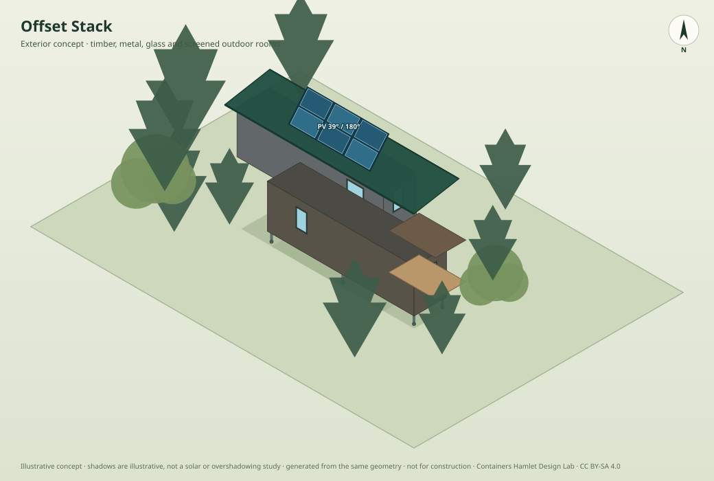
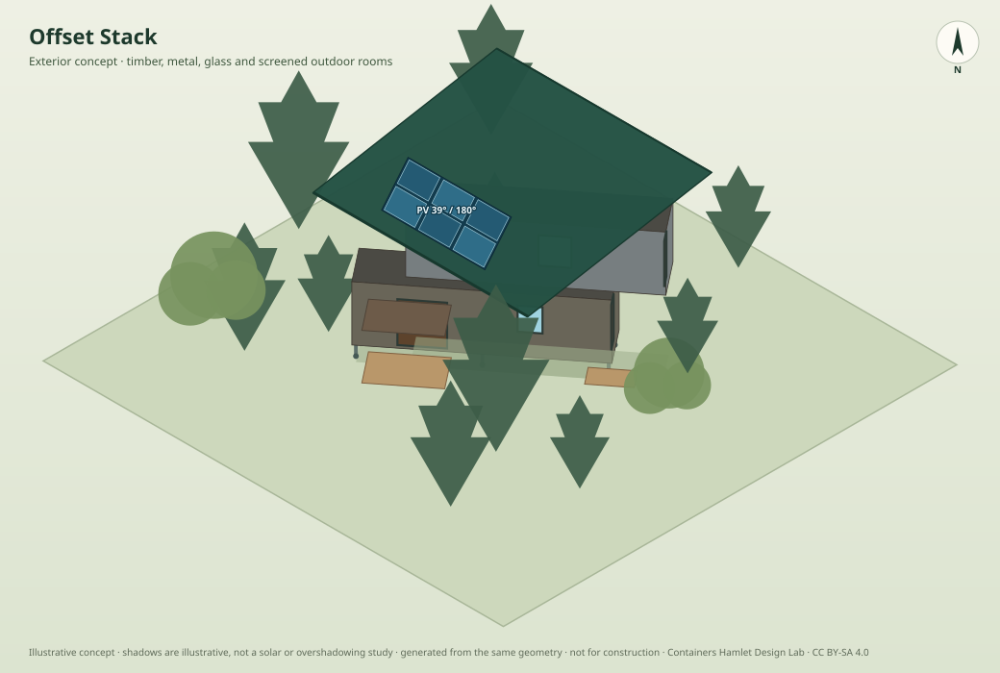
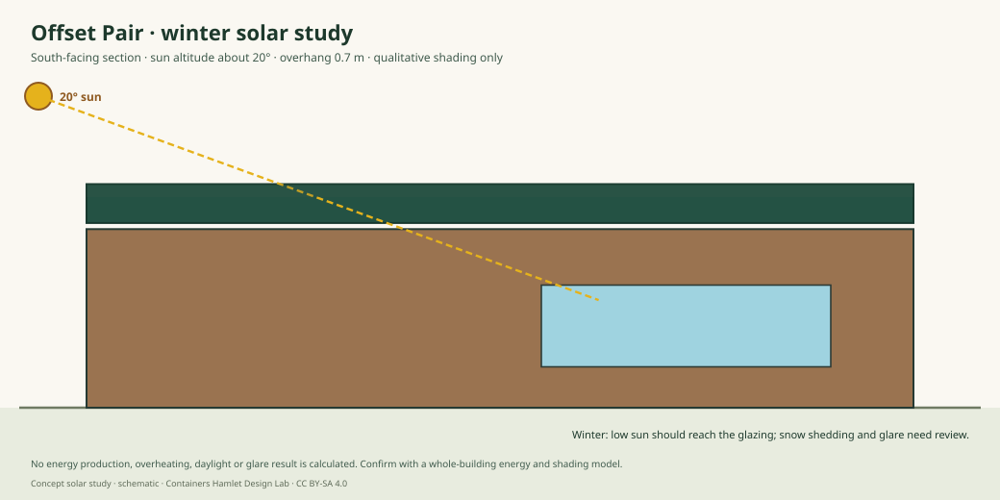
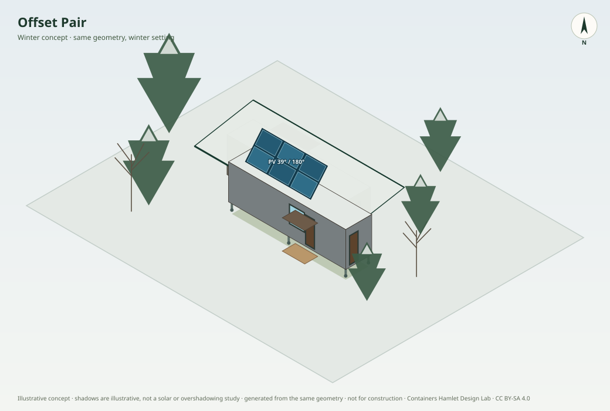

Architectural gallery · Two storeys · hamlet residence
Offset Stack
A ground-floor living module carries a second 40-foot module shifted 2.6 m east. The offset creates a covered outdoor room and a strong upper volume. Part of the upper floor has no module below it, so the design depends on an engineered transfer or cantilever that is not resolved here. An internal stair serves the upper bedroom and studio.
Editable concept. Every plan, elevation, section and isometric on this page is generated from the same JSON model. The drawings are conceptual and are not a construction set.




















Summer and winter
Both views use the same building and vegetation geometry. Evergreen systems remain visible in winter; deciduous climbers and edible planting are shown as dormant. No energy, daylight or privacy score is calculated.
Summer and winter solar studies
Approximate window exposure
| Side | Approximate glazing |
|---|---|
| north | 2.9 m² |
| east | 0 m² |
| south | 8.7 m² |
| west | 2.2 m² |
| Total | 13.8 m² |
Shading and seasonal notes
- External shading intent: fixed overhang and deciduous planting.
Approximate window areas and qualitative screening only. No energy savings, daylight factor, privacy score or code compliance is calculated.
Levels, stacking and support
2 occupied storeys. The upper floor is explicit geometry, not a drawing trick. Every upper module records an elevation and a support intent.
| Module | Level | Base elevation | Declared support | Support overlap |
|---|---|---|---|---|
| m1 | 1 | 0.6 m | ground · not verified | 0% of footprint |
| m2 | 2 | 3.9 m | m1 · not verified | 79% of footprint |
A module directly above another is not automatically supported. The model reports the geometric bearing overlap; it does not calculate capacity, connection strength, lateral stability or foundation reactions.
Accessibility
Physical accessibility is not a design target for this home. Step-free or adaptable features may still be present.
- Step-free entrance
- Recorded as an intent
- Ground-floor essential functions
- Recorded
- Ground-floor bedroom
- Not recorded
- Entrance door
- 950 mm wide · 0 mm threshold
- Circulation target
- 95 cm
- Stair
- straight run · 90 cm wide
- Lift space reserved
- No
- Path connection
- Step-free route to the shared path is a design intent; the connection and grades are not surveyed.
Recorded accessibility issues
- No ground-floor bedroom is recorded. Upper-floor sleeping depends on stairs.
- No space or structure is reserved for a future lift. Do not assume a lift can be added later.
Project targets informed by the Ontario Building Code and CSA B651. No code compliance, licence or professional accessibility review is claimed. Qualitative accessibility review against project targets informed by CSA B651 and the Ontario Building Code. No compliance, licence or professional accessibility assessment is claimed.
Structural review register
Model status: requires review. 16 of 17 concerns need review. This register is generated from the geometry and the recorded review data. It is not an engineering assessment. The only status that can mean professional verification is one with a named reviewer, organisation, date, scope and document; automatic generation never assigns it.
| Concern | Status | Why it is flagged |
|---|---|---|
| Corner castings and corner posts | requires review | Openings, lifting points and stacked loads concentrate force at corner castings and posts. Capacity and condition need review. |
| Vertical load transfer | requires review | Stacked modules need an explicit, continuous load path through posts, beams or an engineered transfer structure. |
| Container orientation and span | requires review | Container side walls are not designed as beams. Orientation, span and opening locations change the structural behaviour. |
| Openings through sidewalls | requires review | Large openings and removed walls need engineered framing, headers and corner reinforcement. |
| Removed structural walls | not assessed | A removed sidewall changes the load path and may require a transfer frame or additional columns. |
| Cantilevers and unsupported overhangs | requires review | m2 is supported over 79% of its footprint; 6.3 m² has no supporting module below. |
| Lateral stability and racking | requires review | Stacked modules need a designed lateral system; container corner posts alone are not a lateral-force strategy. |
| Wind loading and uplift | requires review | Exposed sites, roof overhangs, cladding and stacked modules need wind uplift and lateral load review. |
| Snow loading and drift | requires review | Roof geometry, valleys, parapets and adjacent taller volumes change snow accumulation and drift. |
| Foundation reactions | requires review | Stacking, roof loads and green roofs change point loads, uplift and frost-depth requirements. |
| Connections between modules | requires review | Inter-module connections need designed shear, tension and bearing capacity, not just gravity bearing. |
| Crane access and lifting | requires review | Lifting points, crane reach, ground bearing, matting and overhead clearance need a lift plan. |
| Transport limitations | requires review | Oversize width, route surveys, permits and escort requirements need checking. |
| Fire separation and egress | requires review | Inter-storey separation, protected egress, cladding, cavity barriers and fire service access need review. |
| Corrosion protection | requires review | Coastal, de-icing, ground-contact and concealed steel surfaces need a corrosion strategy and inspection plan. |
| Thermal bridges | requires review | Steel posts, floor edges, connections and penetrations create thermal bridges and condensation risk. |
| Moisture and condensation | requires review | Interstitial condensation, trapped water, roof drainage and floor build-ups need a building-envelope review. |
Do not read a requires review row as a defect, or a blank row as an approval. The register records what still needs professional work.
Envelope assembly
mineral-wool · version 1.0. The diagram is explanatory, not a construction detail; it is not code-compliant or moisture-safe without engineering review.

Layers
- steel container wall — 3 mm (structure)
- air and vapour control layer — 1 mm (air/vapour)
- mineral wool — 150 mm (insulation)
- continuous thermal break / insulation — 10 mm (thermal break)
- ventilated drained cavity — 25 mm (rainscreen)
- timber cladding — 20 mm (cladding)
Condensation, fire, moisture, fastening, structural penetrations and maintenance all need project review. The designer does not claim this assembly is compliant or moisture-safe.
Foundation and ground
helical-piles · 0.6 m clearance · no compaction intent · independent decks: yes.

Elevated floor on engineered piles. Confirm soil, frost uplift, corrosion, lateral capacity and permits. Geotechnical, frost-uplift, corrosion, lateral, slope, permit and conservation-authority review are required. No fill, slab or compaction is the intent; the construction sequence still needs an arborist and erosion-control plan.
Solar tilt and azimuth
39° tilt · 180° azimuth · year-round strategy. True south. Confirm magnetic declination, shading, snow shedding and structural fixing.
Roof: one 8° shed roof. Solar is mounted only on the south slope; the north slope has no array. Array azimuth is true south, independent of building rotation.

The array layout, tilt and azimuth shown in the drawings come from the same canonical energy model that calculates monthly generation. The tilt range 30–45° is an annual-production exploration range; 55–70° is the winter-oriented range. Orientation is measured from geographic north, independent of the SVG canvas or building rotation. Snow-shedding, wind uplift, roof structure and electrical design still require professional review.
Residential energy model
10 panels · 4.5 kWp · 20.0 m² of module surface · 15.0 kWh battery (13.5 kWh usable). Three-season use with frequent winter weekends. Suitable for: Summer occupation; Three-season occupation; Intermittent winter occupation; Full-time occupation with supplementary power.
A two-person household using the home heavily from spring to autumn and often in winter. The upper storey provides the main roof array; the lower roof is not a good solar surface.
This is a conceptual daily and hourly energy balance, not a solar resource assessment, electrical design, structural design or off-grid guarantee. The load list, array geometry and battery limits are the canonical inputs; the drawings and this table are generated from them. Open the energy explorer to test another configuration.
Arrays and mounting
| Array | Panels | Tilt / azimuth | Mounting | Supporting surface | Electrical group | Maintenance | Snow |
|---|---|---|---|---|---|---|---|
| Upper south roof array (pv-a) | 6 × 450 W | 39° / 180° | roof tilted | roof · m2 | string-a | ladder-with-fall-protection; Two rows on the upper shed roof; a roof anchor and a safe ladder plan are required. | Snow sheds onto the lower roof and the terrace edge. Guards and a clear landing zone are required. |
| Garden ground array (pv-b) | 4 × 450 W | 45° / 180° | ground mount | ground | string-b | ground-level; Ground array in the existing east clearing; no mature tree is removed. Service at ground level. | Snow sheds into a low planted strip, away from the path. |
Battery and inverter
| Technology / architecture | LiFePO4 · 48 V |
|---|---|
| Nominal / usable | 15.0 kWh / 13.5 kWh |
| SOC window | 10%–100% |
| Charge / discharge efficiency | 96% / 96% |
| Max charge / discharge | 3.0 kW / 4.0 kW |
| Inverter / standby | 4.0 kW / 8.0 W |
| Essential reserve / target | 5.0 kWh / 3 days |
| Temperature and enclosure | Charge min 0 °C · discharge min -10 °C · heated enclosure |
| Location | Ground-floor service room beside the stair. |
Two strings at different orientations and shading need separate MPPT inputs or strings; confirm with the electrical designer.
Autonomy and winter resilience
Essential autonomy: 4.0 days. Ordinary autonomy: 1.6 days (the essential reserve stays intact). The figures below are deterministic synthetic scenarios; weather is not a forecast.
| Scenario | Days | Load (kWh) | Generation (kWh) | Shared supply (kWh) | Unserved (kWh) | End SOC | Status |
|---|---|---|---|---|---|---|---|
| Typical summer day | 1 | 4.6 | 15.8 | 0.0 | 0.0 | 90% | served |
| Typical winter day | 1 | 5.4 | 4.8 | 0.0 | 0.0 | 84% | served |
| Three consecutive cloudy winter days | 3 | 16.2 | 5.1 | 1.6 | 0.0 | 33% | served |
| Five consecutive cloudy winter days | 5 | 27.1 | 6.1 | 10.5 | 0.9 | 33% | shortfall |
| Snow-covered solar panels | 3 | 16.2 | 0.0 | 5.0 | 1.7 | 33% | shortfall |
| Winter weekend followed by an unoccupied period | 7 | 12.1 | 16.9 | 0.0 | 0.0 | 98% | served |
| Full-time winter occupation | 7 | 37.9 | 27.1 | 2.9 | 0.0 | 33% | served |
| Partial array failure | 3 | 16.2 | 4.4 | 2.3 | 0.0 | 33% | served |
| Loss of shared community electricity | 5 | 27.1 | 7.3 | 0.0 | 10.2 | 33% | shortfall |
| Essential-load-only emergency operation | 5 | 16.8 | 7.3 | 0.0 | 0.0 | 33% | served |
The five-day cloudy result without shared electricity is 2.3 kWh/day unserved. A battery that lasts three days is not sufficient if the array cannot recharge it while supplying the household. Synthetic scenarios. A positive five-day shortfall means the array cannot recharge the battery while supplying the household.
Monthly generation and consumption
| Month | Generation (kWh) | Per day | Consumption per day | Balance per day | Shading | Snow availability |
|---|---|---|---|---|---|---|
| January | 149.9 | 4.8 | 5.4 | -0.6 | 17.2% | 0.82 |
| February | 192.0 | 6.9 | 5.4 | +1.5 | 17.2% | 0.85 |
| March | 336.6 | 10.9 | 4.7 | +6.1 | 14.9% | 0.92 |
| April | 402.4 | 13.4 | 4.7 | +8.7 | 14.9% | 0.98 |
| May | 475.5 | 15.3 | 4.7 | +10.6 | 14.9% | 1.00 |
| June | 471.8 | 15.7 | 4.5 | +11.2 | 12.6% | 1.00 |
| July | 489.0 | 15.8 | 4.5 | +11.2 | 12.6% | 1.00 |
| August | 452.1 | 14.6 | 4.5 | +10.0 | 12.6% | 1.00 |
| September | 375.1 | 12.5 | 4.7 | +7.8 | 14.9% | 1.00 |
| October | 263.2 | 8.5 | 4.7 | +3.8 | 14.9% | 0.99 |
| November | 146.6 | 4.9 | 5.4 | -0.5 | 17.2% | 0.90 |
| December | 118.3 | 3.8 | 5.4 | -1.6 | 17.2% | 0.80 |
Load list and calculation for Offset Stack
Daily consumption is calculated from rated power, quantity, hours, duty cycle and the profile's class factor. It is not assigned from floor area. Summer and winter columns show the full-time profiles; the intermittent winter profile reduces discretionary and high-demand loads.
| Load | Class | Rated power | Summer / shoulder / winter hours | Duty | Summer kWh/day | Winter kWh/day | Supply | Deferrable | Confidence | Source and note |
|---|---|---|---|---|---|---|---|---|---|---|
| Refrigerator, 45–60 L DC compressor | essential continuous · essential | 52.0 W | 24.0 / 24.0 / 24.0 h | 38.0% | 0.47 | 0.47 | DC | No | low | Manufacturer-typical 12/24 V compressor fridge; 35% duty at about 20 °C. Food storage is a minimum load even for a small home. Confirm the chosen unit and its duty cycle. |
| Interior LED lighting | essential intermittent · essential | 85.0 W | 1.5 / 2.5 / 3.5 h | 100.0% | 0.13 | 0.30 | DC | No | medium | Six to ten 5–9 W LED fixtures, used for the stated hours. Assume DC LED luminaires on a 24 V or 48 V bus with local switching. |
| Exterior LED lighting and entry light | essential intermittent · essential | 12.0 W | 0.5 / 4.0 / 6.0 h | 100.0% | 0.01 | 0.07 | DC | No | medium | One 12 W entry and path luminaire with timer or manual control. Dark-sky friendly, shielded and timed; no continuous floodlighting. |
| USB-C charging | essential intermittent · essential | 25.0 W × 2 | 2.0 / 2.0 / 3.0 h | 100.0% | 0.10 | 0.15 | DC | Yes | medium | Two 25 W USB-C ports at partial load, two to three hours. DC-native; avoids running the inverter for small devices. |
| Phones and tablets | discretionary | 15.0 W × 2 | 3.0 / 3.0 / 3.0 h | 100.0% | 0.09 | 0.09 | DC | Yes | medium | Two devices at about 15 W average charging power. Resident devices; not a site load. |
| Laptop computer | discretionary | 45.0 W × 2 | 3.0 / 2.5 / 3.0 h | 100.0% | 0.27 | 0.27 | AC | Yes | medium | One 45 W laptop with mixed charging and use. Quantity changes with household size in the explorer. |
| Internet router and local network | essential continuous · essential | 10.0 W | 24.0 / 24.0 / 24.0 h | 100.0% | 0.24 | 0.24 | DC | No | medium | 10 W router or LTE gateway running continuously. Kept on for monitoring and remote communication even when unoccupied. |
| LTE or fixed-wireless radio | essential continuous · essential | 5.0 W | 24.0 / 24.0 / 24.0 h | 100.0% | 0.12 | 0.12 | DC | No | low | 5 W radio modem running continuously. No fibre is assumed in the woodland. |
| HRV or ERV ventilation | essential continuous · essential | 38.0 W | 24.0 / 24.0 / 24.0 h | 45.0% | 0.41 | 0.41 | DC | No | medium | 28 W ECM fan at low speed; 35–50% effective duty with boost periods. Required for a tight envelope. Confirm airflow, frost protection and controls. |
| Ceiling fans | discretionary | 25.0 W | 5.0 / 1.0 / 0.0 h | 100.0% | 0.13 | 0.00 | DC | Yes | medium | One 25 W DC ceiling fan. Reduces the need for active cooling. |
| Water pressure pump | essential intermittent · essential | 500.0 W | 0.1 / 0.1 / 0.2 h | 100.0% | 0.06 | 0.08 | AC | No | low | 400 W booster pump, about 7–10 minutes per day. Rainwater or shallow-well supply with a pressure tank. |
| Sensors, controllers and freeze monitoring | essential continuous · essential | 3.0 W | 24.0 / 24.0 / 24.0 h | 100.0% | 0.07 | 0.07 | DC | No | medium | Sensor node, controller and low-power display. Supports freeze protection and remote monitoring. |
| Battery management system | essential continuous · essential | 3.0 W | 24.0 / 24.0 / 24.0 h | 100.0% | 0.07 | 0.07 | DC | No | medium | BMS and shunts, 3 W. Included in the battery system, not the inverter. |
| Inverter standby | essential continuous · essential | 7.0 W | 24.0 / 24.0 / 24.0 h | 100.0% | 0.17 | 0.17 | DC | No | medium | 7 W standby when the inverter is on; 3 W in eco mode when unoccupied. Keep the inverter off at night or when the cabin is empty where the design allows. |
| Induction cooking | high demand | 1800.0 W | 0.5 / 0.5 / 0.6 h | 75.0% | 0.61 | 0.81 | AC | Yes | medium | One portable 1,800 W induction burner at 75% average power while cooking. Deferrable within the day; a shared kitchen can absorb larger events. |
| Electric kettle | high demand | 1200.0 W | 0.1 / 0.1 / 0.2 h | 100.0% | 0.12 | 0.22 | AC | Yes | medium | 1,200 W kettle, one to three short boils per day. High instantaneous load; check inverter surge. |
| Toaster or small grill | high demand | 800.0 W | 0.1 / 0.1 / 0.1 h | 100.0% | 0.05 | 0.08 | AC | Yes | low | 800 W appliance used briefly. Ordinary small appliance. |
| Blender or hand mixer | discretionary | 300.0 W | 0.0 / 0.1 / 0.1 h | 100.0% | 0.01 | 0.02 | AC | Yes | low | 300 W appliance used for a few minutes. Small kitchen appliance. |
| Battery enclosure heating | essential continuous · essential | 35.0 W | 0.0 / 0.0 / 24.0 h | 18.0% | 0.00 | 0.15 | DC | No | low | Thermostatically controlled 35 W pad; average duty about 18% in winter. The enclosure is insulated and kept above freezing. Confirm the heater control and failure mode. |
| Water treatment (UV and filtration) | essential intermittent · essential | 20.0 W | 2.0 / 2.0 / 2.5 h | 100.0% | 0.04 | 0.05 | DC | No | low | UV lamp and controller rated 20 W, two to three hours per day. Required only if the water source needs treatment; confirm with water testing. |
| Local security camera | essential continuous · essential | 5.0 W | 24.0 / 24.0 / 24.0 h | 100.0% | 0.12 | 0.12 | DC | No | medium | One local-recording camera, 5 W. Local storage only; no cloud service is assumed. |
| Chest freezer | essential continuous · essential | 55.0 W | 24.0 / 24.0 / 24.0 h | 30.0% | 0.40 | 0.40 | AC | No | low | 55 W chest freezer, 30% duty. Raises the essential load. Confirm the appliance and its cold-weather location. |
| Television or monitor for evening use | discretionary | 70.0 W | 3.0 / 3.5 / 4.0 h | 100.0% | 0.21 | 0.28 | AC | Yes | medium | 70 W screen, two to three hours. Shared or small screen; not assumed to be on all day. |
| Coffee machine | high demand | 900.0 W | 0.1 / 0.1 / 0.1 h | 100.0% | 0.07 | 0.11 | AC | Yes | low | 900 W drip or espresso machine, one short cycle. High instantaneous load. |
| Home server or network storage | essential continuous · essential | 20.0 W | 24.0 / 24.0 / 24.0 h | 100.0% | 0.48 | 0.48 | DC | No | low | 25 W network-attached storage or small home server, continuously available. Optional. It supports local backups, media and home automation without a cloud service. |
| Electric pressure cooker or slow cooker | high demand | 900.0 W | 0.1 / 0.2 / 0.2 h | 100.0% | 0.11 | 0.18 | AC | Yes | low | 900 W appliance used for one short cooking cycle most days. An efficient way to cook with electricity; still a high instantaneous load. |
Heating, hot water and other excluded loads
The base estimate excludes electric resistance space heating, conventional electric domestic hot water, electric laundry, additional cooking appliances and electric vehicle charging. These optional profiles are shown separately:
| Optional profile | Summer | Shoulder | Winter | Consequence |
|---|---|---|---|---|
| Cold-climate air-source heat pump | 0.3 kWh | 2.0 kWh | 8.0 kWh | Heating is excluded from the base residential estimates. A heat pump would roughly double or triple winter electricity demand and requires a much larger array and battery, or shared heating. |
| Conventional electric domestic hot water | 2.0 kWh | 2.6 kWh | 3.4 kWh | Not included in the base. A heat-pump water heater would use roughly one third of this. |
| Heat-pump water heater | 0.7 kWh | 0.9 kWh | 1.2 kWh | Lower demand than resistance hot water, but it needs a heated, ventilated location and adds compressor noise. |
| Electric laundry (washer and dryer) | 0.5 kWh | 0.6 kWh | 0.8 kWh | A vented or heat-pump dryer is a large flexible load. The shared lodge is the preferred location. |
| Additional electric cooking appliances | 0.8 kWh | 0.9 kWh | 1.0 kWh | A second oven or a large induction range increases both daily energy and peak demand. |
| Electric vehicle charging | 3.0 kWh | 3.0 kWh | 4.0 kWh | Even modest commuting would dominate the residential array. Shared charging at the lodge, with a separate solar canopy, is the sensible location. |
A heat pump would change the system substantially. The project does not quietly absorb heating into the residential totals; the shared lodge is the preferred location for higher-energy services such as laundry and emergency charging.
Shared community electricity
The primary configuration is community backup. Shared electricity is an option, not an unexplained assumption.
| Configuration | Description | Supplementary (kWh/day) | Distribution loss | Note |
|---|---|---|---|---|
| Independent residence | Each residence relies on its own array and battery. | 0.0 | 0% | No shared electricity is assumed. A five-day winter cloud event must be met by load reduction, an emergency generator or accepting a shortfall. |
| Independent with community backup | The residence keeps essential independent capability but can draw limited supplementary electricity from the common lodge. | 4.0 | 6% | The connection is sized for essential and limited ordinary loads, not for electric heating. It is not guaranteed during a region-wide outage. |
| Shared community microgrid | Multiple arrays and batteries contribute to a professionally designed shared electrical network. | 10.0 | 9% | A microgrid shares supply and demand but does not remove the effect of region-wide winter cloud, snow or a failed shared inverter. |
Shared infrastructure needs a written governance and cost-allocation agreement that preserves resident autonomy and equitable access.
Validation and required reviews
- structural review: Roof structure, wind uplift, snow drift and fixing for the PV arrays need structural review.
- electrical review: String sizing, rapid shutdown, disconnects, bonding, grounding, battery enclosure and inspection need a licensed electrical design.
- environmental review: Keep the array on the roof, canopy or existing clearing. Do not clear mature trees to increase the modelled yield.
No surveyed coordinates, measured weather, shading study or solar resource assessment exists for this fictional property. Panel dimensions, efficiency, temperature coefficients, inverter efficiency and battery usable capacity vary by product. Tree height, canopy density and winter snow cover are simplified geometric assumptions. Occupancy and appliance use are assumptions, not metered data. Battery ageing, cold-weather derating and inverter surge are not fully modeled.
Heat-pump assessment
Design heat load at −30 °C: 3.4 kW. Annual heating 4924 kWh thermal; annual cooling 930 kWh. An air-source heat pump would use about 2609 kWh/year for heating and 469 kWh/year for cooling, in addition to the household load.
The existing household demand and reference array are unchanged. Full-time heat-pump heating would require about 49 additional winter-critical panels (97.9 m²), 92 kWh of additional battery for three days and a combined peak of 6.2 kW. That panel area exceeds the remaining roof area; a ground array, canopy or shared array would be required. This is why the project does not present full-time electric heating as a drop-in off-grid service.
| Condition | Heating demand (kWh/day) | Peak load (kW) | COP | Available capacity (kW) | Resistance backup (kWh/day) | Electrical (kWh/day) | Capacity result |
|---|---|---|---|---|---|---|---|
| Mild shoulder season (10 °C) | 9.3 | 0.4 | 3.78 | 3.7 | 0.0 | 5.7 | Capacity covers the load |
| Cool weather (5 °C) | 18.4 | 0.8 | 3.51 | 3.5 | 0.0 | 8.5 | Capacity covers the load |
| Early winter (0 °C) | 27.6 | 1.2 | 2.82 | 3.3 | 0.0 | 13.0 | Capacity covers the load |
| Ordinary cold winter (-10 °C) | 46.0 | 1.9 | 2.21 | 2.9 | 0.0 | 24.1 | Capacity covers the load |
| Severe winter (-20 °C) | 64.4 | 2.7 | 1.47 | 2.2 | 10.6 | 50.4 | Supplemental heat needed |
| Extreme winter design (-30 °C) | 82.7 | 3.4 | 1.15 | 1.5 | 45.8 | 81.2 | Supplemental heat needed |
Operating strategies
| Strategy | HP electricity (kWh/yr) | Additional panels | Additional battery (kWh) | Wood heat (kWh thermal) | Unserved heat (kWh thermal) |
|---|---|---|---|---|---|
| A · Passive architecture and wood heating | 0 | 0 | 0 | 4200 | 724 |
| B · Surplus-solar heat pump | 1170 | 0 | 0 | 4200 | 0 |
| C · Hybrid wood and air-source heating | 1044 | 3 | 31 | 2954 | 0 |
| D · Full-time air-source heating | 2609 | 49 | 92 | 0 | 0 |
| E · Full-time ground-source heating | 2106 | 38 | 63 | 0 | 0 |
| F · Passive cooling with optional mechanical cooling | 469 | 2 | 0 | 0 | 0 |
Passive design and resilience
A plausible passive package would reduce annual heating by 1157 kWh, avoid about 371 kWh/year of heat-pump electricity and avoid 7 additional panels. It does not remove the winter cloud risk.
| Scenario | Days | Outdoor | HP electricity (kWh/day) | Generation (kWh/day) | End SOC | Household unserved | Heat unserved | Status |
|---|---|---|---|---|---|---|---|---|
| One cloudy winter day | 1 | -10 °C | 24.1 | 1.7 | 33% | 0.0 | 2.6 | heating shortfall |
| Three cloudy winter days | 3 | -10 °C | 24.1 | 1.7 | 33% | 0.0 | 27.1 | heating shortfall |
| Five cloudy winter days | 5 | -10 °C | 24.1 | 1.2 | 33% | 1.8 | 52.3 | household shortfall |
| Snow-covered arrays | 3 | -20 °C | 50.4 | 0.0 | 33% | 3.3 | 76.0 | household shortfall |
| Extreme cold with low solar | 5 | -30 °C | 81.2 | 1.0 | 33% | 2.7 | 256.9 | household shortfall |
| Partial battery at the start | 3 | -20 °C | 50.4 | 1.5 | 33% | 0.4 | 81.7 | household shortfall |
| Heat pump failure | 3 | -20 °C | 0.0 | 1.5 | 33% | 0.0 | 0.0 | served |
| Loss of shared community electricity | 5 | -20 °C | 50.4 | 1.5 | 33% | 15.8 | 134.3 | household shortfall |
Baseline household demand and the existing reference array are unchanged. Heat-pump electricity is additional. All results are preliminary. Wood heat is a design intent and is not appropriate for every resident. See the heat-pump assessment for the method, charts and the interactive explorer.
Vegetation systems
No vegetation system is recorded for this concept.
Planting is independently supported where practical. Fire, moisture, structural loads, irrigation, plant selection and maintenance require professional review. Compare the four vegetation systems.
Fire and water services
These are intents and unknowns, not approvals. The model does not calculate fire-resistance ratings, building separation, radiant heat, sprinkler performance, WUI compliance, rainwater yield, tank sizing, potable-water safety or fire-service water supply.
| Service | Recorded intent | Status |
|---|---|---|
| Roof / eave / vent / glazing | Class A roof; closed noncombustible eaves intended; ember-resistant vents intended; tempered glazing intended | Concept intent; not a fire-resistance rating |
| Deck / porch / storage | Noncombustible deck not recorded; exterior shutters intended | Unresolved — combustible deck/storage risk |
| Defensible space | 10 m concept distance | Concept; requires site/fire review |
| Fire-service water | Not confirmed | Unresolved; confirm with fire department |
| Rainwater catchment | Metal roof catchment; gutters, leaf guards and first flush required | conceptual |
| Storage / treatment | cistern; volume not sized; potable no | No yield, freeze, overflow or water-quality design claimed |
| Fire reserve | Separate: yes; connection: not-designed; verified: no | Unresolved; a daily tank is not a fire reserve |
See fire resilience and water and resilience. No building separation, inter-storey fire separation, cavity barrier, hydrant flow, cistern volume or potable-water treatment is designed here.
Pattern lens
A reading aid, not a finding. Select a pattern to highlight the relevant provisional inferred room band. The highlighted room bands are provisional and inferred from the model, not an authored layout. The same observations, questions and limits are below and remain available without JavaScript.
No pattern selected. All annotations remain available in the list below.
All annotations, evidence and limits
127 · Intimacy Gradient evidence-needed provisional plan
The stair separates the shared ground floor from the upper sleeping, bathroom and studio zones, but the room bands have no partitions or doors, so the gradient is a plan diagram rather than a demonstrated sequence.
Observations: The ground floor groups living, kitchen, bathroom and stair in one 12.19 m band. The upper floor places sleeping, bathroom, studio and storage behind the stair. No partitions or doors are modeled, so thresholds and acoustic separation cannot be read.
Question: Does the stair create a clear threshold between shared and private life, or only a level change?
Limits: No resident has tested the sequence. The stair is conceptual and its enclosure is not modeled.
112 · Entrance Transition trade-off-identified provisional plan
The east entry door opens into the living band; the covered south porch is a separate outdoor room and does not shelter the entry.
Observations: The entry door is on the east face at 1.2 m. Covered porch p1 is on the south face, 4 x 2.6 m, under the upper offset. No entrance hall or vestibule is modeled.
Question: Does the east door provide a sheltered arrival, or is the covered porch only a garden room?
Limits: The site path approach is south-west while the entrance is east. Weather protection, lighting and wayfinding at the entry are not tested.
159 · Light on Two Sides of Every Room not-evaluated provisional plan
Openings are recorded on the south, west and north faces, but the interior is a zone band and no daylight study exists.
Observations: The ground living band has a south sliding door and a west window. The upper sleeping band has a north window; the upper studio has a south window and an east door. No partitions, furniture or shading are modeled.
Question: Which ground and upper rooms receive useful light from more than one direction?
Limits: Opening count is not a daylight result. No daylight factor, glare or view analysis exists.
163 · Outdoor Room trade-off-identified provisional plan
The covered ground porch is created by the upper offset; the recorded upper porch has no door on its south face, so it is not an accessible outdoor room.
Observations: The ground porch p1 is 4 x 2.6 m and roofed by the upper module. The upper porch p2 is 2.4 x 1.4 m, open and unroofed. The upper east door is not on the p2 face.
Question: Is the ground porch a sheltered outdoor room, and can the upper porch ever be used without a door and guarding?
Limits: No guarding, support or access is modeled for p2. Enclosure, wind, sun and privacy are not tested.
180 · Window Place not-evaluated provisional plan
The living band has a west window and a south sliding door; the upper sleeping has a north window, but no window seat, alcove or sill detail is modeled.
Observations: The ground living band has a south sliding door and a west window. The upper sleeping band has a north window. No built-in seat, deep sill or furniture is modeled.
Question: Is there a place to sit by a window without blocking the stair or the living route?
Limits: Furniture and sill heights are not modeled. Glare, privacy and egress at the window are unresolved.
Pattern numbers/titles are referenced from A Pattern Language; the interpretations are original. An annotation does not prove privacy, daylight, accessibility, fire safety or resident satisfaction. A provisional plan is not an authored room layout.
Concept facts
- Storeys
- 2 occupied storeys (Ground floor at +0.6 m; Upper floor at +3.9 m)
- Containers
- 2 × 40ft + 40ft
- Gross floor area
- 59.5 m² nominal modules plus glazed links
- Ground coverage
- 36.1 m² projected footprint
- Building height
- 7.3 m to the roof
- Roof
- shed · 8° pitch · 0.7 m overhang
- Nominal conditioned area
- 59.4 m² (modules plus glazed hall)
- Screened / covered outdoor
- 4 × 2.6 m covered; 2.4 × 1.4 m covered
- Glazing intent
- 13.8 m² approximate glazed area
- Thermal envelope
- triple glazed, low-e, argon, thermally broken frames; 250 mm roof; 200 mm floor; HRV/ERV
- Accessibility classification
- Physical accessibility is not a design target for this home. Step-free or adaptable features may still be present.
- Structural review status
- Model status: requires review. 16 concerns need review.
- Architectural family
- offset stack · rectangular · entrance to the east
Concept only. Not reviewed by an architect, engineer, building official or accessibility consultant. No construction, energy, code or cost claim.